El Filibusterismo
Plot Summary
A steamboat traveling from Manila to La Laguna carries passengers from all social classes, including prominent
figures like priests and journalists, as well as the disguised Simoun, who is plotting a revolution. Two students,
Basilio and Isagani, are also aboard, petitioning for a Spanish-language academy.
In La Laguna, Cabesang Tales, a farmer, is extorted by the local priests for rent on land they claim to own.
His daughter Julí sells herself into servitude to ransom her father after he is kidnapped by the authorities.
Basilio, who has been away in Manila, returns to La Laguna and meets Simoun, recognizing him as Ibarra in
disguise. Simoun seeks to incite an uprising but Basilio refuses to join his cause.
After being betrayed by the authorities, Tales steals Simoun’s gun, kills the priest and landowner who
wronged him, and joins bandits in the forest.
Plácido, a medical student, loses faith in his education and, after a humiliating experience, turns to
Simoun for help. Simoun pulls him into his revolutionary plot.
Isagani and other students learn that Don Custodio has decided on the creation of the Spanish-language
academy, but it will be run by the priests, sparking anger among the students.
At a party, Simoun helps Chinese merchant Quiroga with his debts, and the students celebrate their
small victory despite the disappointment about the academy’s decision. During a performance of a French operetta,
Isagani sees his fiancée with Juanito, deepening his emotional turmoil.
Simoun proposes a plan to rescue María Clara from her convent, but Basilio reveals she has died, devastating
Simoun and escalating his desire for revenge.
After a student banquet, subversive broadsides are discovered, leading to arrests of the students. Isagani
debates with Father Fernández, who reluctantly defends the colonial system.
The student movement is crushed, and Basilio, unprotected after Captain Tiago’s death, remains imprisoned.
Julí attempts to petition for Basilio’s release but is assaulted and dies. The chief of staff resigns in protest.
After being released, Basilio agrees to join Simoun’s plot to bomb a wedding, targeting Manila’s elite.
However, Isagani intervenes, throwing the bomb into the river and escaping unrecognized.
Simoun, wounded and on the run, seeks shelter with Father Florentino. He reveals his plan and regrets
his actions, prompting a philosophical discussion about justice and revenge. Florentino prays for Simoun
and throws his jewels into the ocean, symbolizing the destruction of Simoun’s vision.
Key Characters
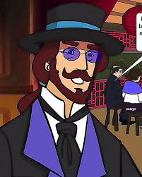
Simoun (Ibarra)
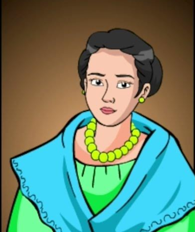
Maria Clara
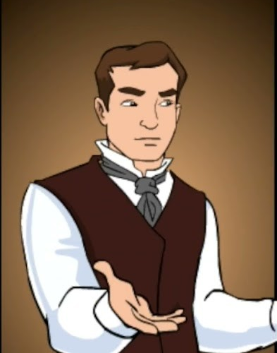
Isagani
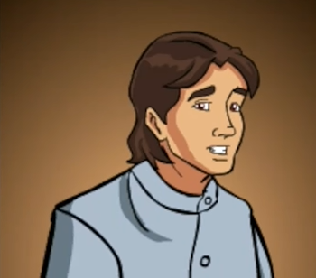
Basilio
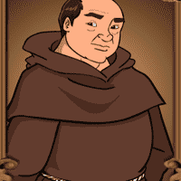
Don Custodio
Padre Irene
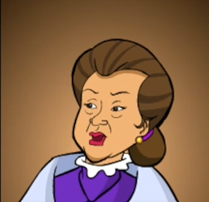
Dona Victorina
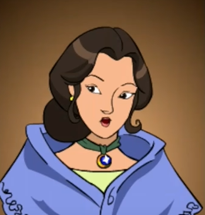
Paulita Gomez
Padre Camorra
Padre Salvi
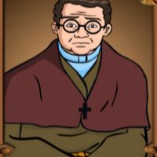
Padre Sibyla
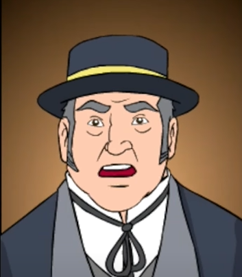
Kapitan Tyago
Padre Florentino
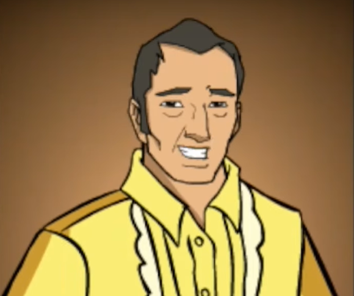
Kabesang Tales
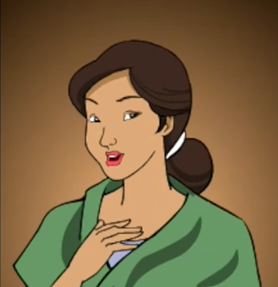
Juli
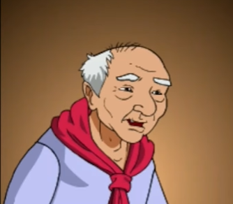
Tandang Selo
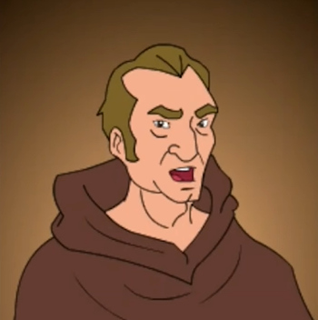
Padre Fernandez
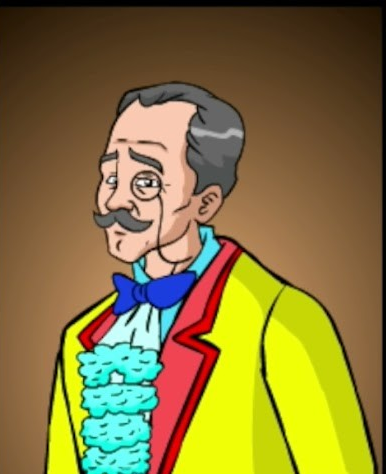
Don Tiburcio
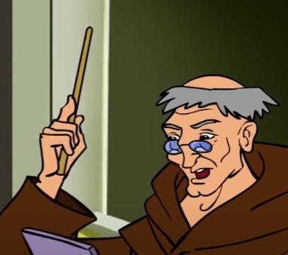
Padre Millon
Don Timoteo
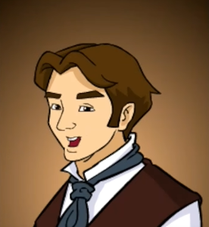
Makaraig
×